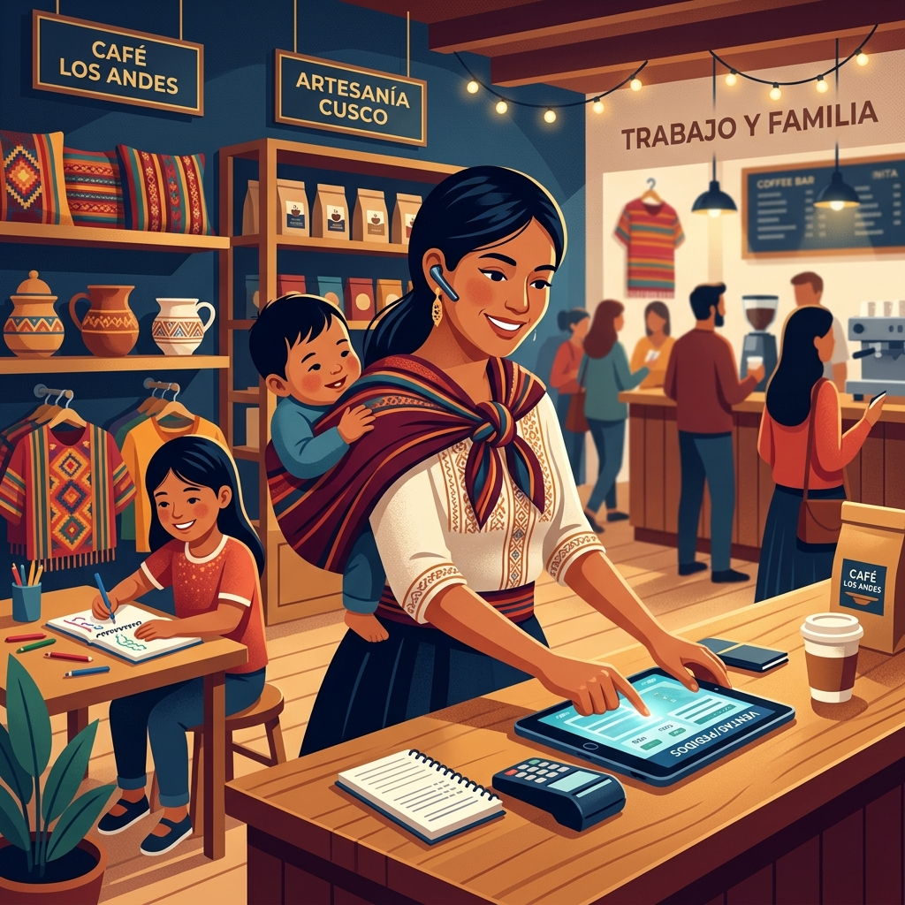
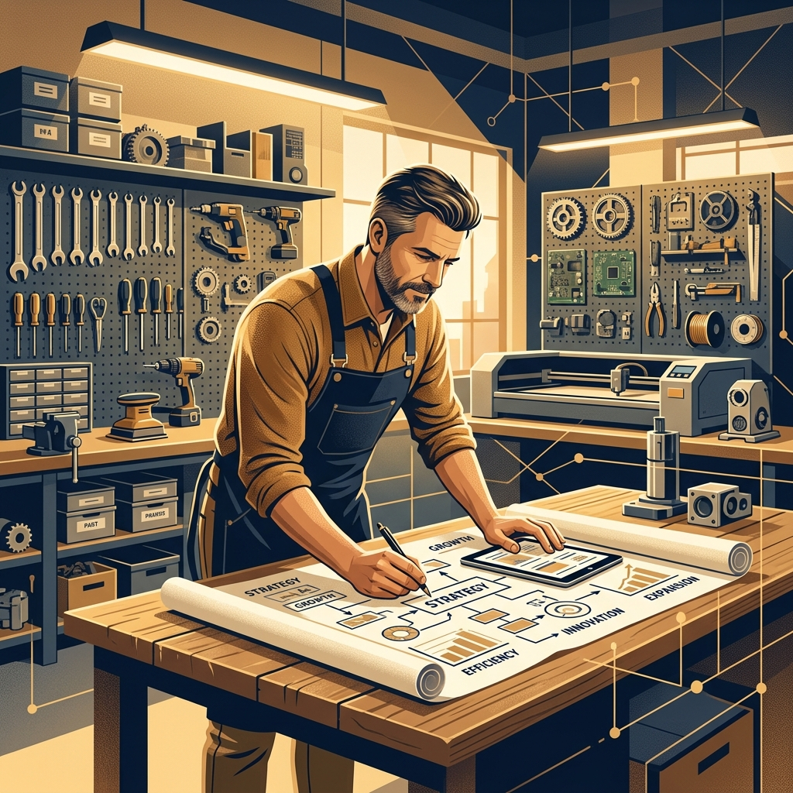

UNIVERSIDAD DE HUÁNUCO
Diagnóstico de Campo, Arquetipos de Usuario
y Árbol de Problemas
Investigación empírica aplicada a una muestra de 10 trabajadores y familias independientes. Análisis cualitativo, mapa de empatía profunda y diseño de árbol causa-efecto bajo el marco lógico.
Muestra de Entrevistas y Diagnóstico Estadístico
Sistematización de los 10 casos reales levantados en campo (ingresos, situación familiar y fricciones)
| Entrevistado (Edad) | Estado Civil / Rol | Ingreso Mensual | Objetivo Principal | Dificultades en su Vida | Fricción Operativa |
|---|---|---|---|---|---|
| 1. Rosa Solos (40) | Cabeza de Hogar (Conviviente) | S/ 1,200 | Sacar a sus hijos adelante | Sobrecarga del hogar | Problemas con Serenazgo |
| 2. Gladis (38) | Cabeza de Hogar (Soltera) | S/ 1,000 | Sacar a sus hijos adelante | No haber estudiado | Cansancio extremo al trabajar |
| 3. Katerine Cruz (35) | Soltera (Hija) | S/ 1,000 | Estudiar carrera técnica | Falta de tiempo | Choferes que no obedecen |
| 4. Jose (18) | Soltero (Joven) | S/ 1,800 | Estudiar y progresar | Llegar al trabajo (distancia) | Congestión vehicular diaria |
| 5. Carlos Mendoza (30) | Soltero (Independiente) | S/ 1,800 | Ahorrar dinero | Poco tiempo libre | Encontrar trabajo estable |
| 6. Andrea Flores (37) | Cabeza de Hogar (Casada) | S/ 2,300 | Estabilidad económica | Administrar su tiempo | Atención doméstica y negocio |
| 7. Christina (40) | Cabeza de Hogar (Viuda) | S/ 400 | Ahorrar para sus hijos | Ingreso insuficiente | Vulnerabilidad económica crítica |
| 8. Wuilfredo (40) | Cabeza de Hogar (Conviviente) | S/ 1,500 | Ahorrar para independizarse | No ser profesional | Discusiones en el trabajo |
| 9. María Salazar (32) | Soltera (Independiente) | S/ 600 | Estabilidad económica | Dificultad en la carga física | Escasez de tiempo diario |
| 10. Abel Paucar (30) | Soltero (Apoyo a padres) | S/ 1,300 | Apoyar a sus padres | Comprensión lectora | Doble turno trabajo y estudio |
Arquetipo 1: La Madre/Padre Cabeza de Hogar Multirrol
Representa a Rosa, Gladis y Andrea (37-40 años) — Sobrecarga de crianza y comercio

Rosa / Gladis
Cabeza de Familia Monoparental
Garantizar la alimentación, salud y educación de sus hijos, asegurando que ellos sí logren una profesión y no repitan el ciclo de precariedad.
- Presión de serenazgo: Miedo continuo a decomisos y desalojos en la vía pública donde comercian.
- Sobrecarga física y mental: Cansancio acumulado por atender el hogar, cocinar, cuidar hijos y salir a trabajar sin relevo.
- Limitación formativa: Frustración por no haber terminado estudios superiores, lo que restringe sus opciones laborales.
- Guarderías comunales o nidos a bajo costo para liberar horas productivas.
- Capacitación en técnicas comerciales y finanzas familiares básicas.
- Espacios comerciales seguros y formales con microcréditos ágiles.
Arquetipo 2: El Joven Trabajador en Doble Turno
Representa a Abel, Jose y Katerine (18-32 años) — Atrapados entre el sostén a padres y su superación
Abel / Jose
Trabajador Joven con Meta Educativa
Costearse estudios técnicos o superiores para acceder a un empleo calificado, ahorrar capital y mejorar el bienestar de sus progenitores.
- Barreras formativas: Dificultades notables en comprensión lectora y competencias analíticas básicas.
- Agotamiento por transporte: Congestión vehicular urbana que devora entre 2 a 3 horas diarias de viaje.
- Dilema tiempo vs dinero: Si trabajan menos horas para estudiar, no les alcanza para las mensualidades.
- Educación técnica modular con horarios flexibles, nocturnos o semipresenciales.
- Tutorías en habilidades blandas y nivelación en comprensión lectora.
- Rutas y transportes optimizados o alternativas de trabajo cercano.
Arquetipo 3: El Operario con Techo Laboral
Representa a Wuilfredo, Carlos Mendoza y María Salazar (30-40 años) — Lucha por capitalizarse

Wuilfredo / Carlos
Operario / Emprendedor Operativo
Acumular ahorros sólidos para formalizar un negocio propio o adquirir activos, escapando de la dependencia de contratos precarios o jornadas extenuantes.
- Techo salarial bajo: Sin un título técnico o profesional, su poder de negociación frente a empleadores es casi nulo.
- Conflictos interpersonales en ruta: Discusiones con choferes, pasajeros conflictivos o clientes informales.
- Vulnerabilidad ante fallas mecánicas: Gastos imprevistos en herramientas o vehículos que eliminan semanas de ahorro.
- Certificaciones de competencias laborales para validar su experiencia práctica.
- Capacitación en ventas, negociación y resolución de conflictos.
- Herramientas de ahorro programado y fondos de contingencia para emergencias.
Mapa de Empatía Integral: Los 4 Cuadrantes
Sistematización del cuadro de empatía manuscrito aplicado a los entrevistados
- Pensamientos constantes: "¿Cómo haré para que mis hijos terminen una carrera?", "¿Cuándo podré terminar mis propios estudios?".
- Sensación de agobio: Angustia por la falta de tiempo libre y el estrés financiero diario.
- Frustración arraigada: Pesar por no haber tenido la oportunidad de estudiar una carrera superior.
- Cansancio físico y mental: Desgaste acumulado por años de trabajo operativo ininterrumpido.
- Entorno urbano caótico: Calles con comercio ambulatorio masivo, competencia desleal y falta de orden.
- Tráfico vehicular pesado: Horas enteras perdidas en traslados que complican la jornada diaria.
- Operativos de fiscalización: Presencia constante de serenazgo incautando mercadería a comerciantes.
- Círculo de precariedad: Compañeros y vecinos lidiando exactamente con las mismas restricciones.
- Lo que dice: "Hay que trabajar duro por los hijos", "El día no me alcanza para nada".
- Lo que oye en la calle: Discusiones con choferes, pasajeros apurados y reclamos de autoridades.
- Discurso social: Oye constantemente que "el estudio es el futuro", pero ve pocas oportunidades accesibles para adultos.
- Mensajes de su familia: Demandas de mayor presencia en el hogar y apoyo en las tareas escolares.
- Perseverancia extrema: Trabajan extensas jornadas de 10 a 14 horas de lunes a sábado o domingo.
- Malabares de roles: Combinan el empleo operativo con cocinar, atender el hogar y cuidar a menores o padres ancianos.
- Ahorro precario: Guardan lo mínimo que pueden en alcancías o panderos familiares sin rentabilidad.
- Resiliencia operativa: Lidian con fallas mecánicas, multas y sobrecargas sin abandonar su actividad.
Mapa de Empatía: Dolores (Esfuerzos) vs Ganancias (Deseos)
Identificación de las barreras emocionales profundas y las motivaciones de cambio
Incertidumbre constante por no saber si el ingreso del mes cubrirá la comida, alquiler y salud.
Cansancio corporal y fatiga mental que deteriora la paciencia y la salud emocional familiar.
Sentimiento de inferioridad o estancamiento por dificultades en comprensión lectora y falta de título.
Riesgo permanente de sanciones del serenazgo, pérdidas por tráfico y fallas mecánicas costosas.
Tener un flujo de ingresos estable que permita planificar el mes y generar ahorros reales para emergencias.
Ver a sus descendientes graduados en institutos o universidades, rompiendo la precariedad familiar.
Programas de capacitación de horarios compatibles con el empleo que enseñen habilidades aplicables ya.
Poder trabajar en entornos formales, regulados y dignos sin persecución municipal ni hostilidad.
Problemas, Causas, Efectos y Necesidades (Ejes 1 y 2)
Dimensión Económica y Dimensión de Sobrecarga de Roles y Gestión de Tiempo
Percibido en la mayoría, con ingresos desde S/ 40 hasta S/ 2,300 y una alta carga fija de gastos familiares.
• Falta de estudios superiores completos.
• Dependencia del día a día (informalidad).
• Poca optimización de negocios o ventas.
• Estrés financiero permanente.
• Incapacidad estructural para ahorrar.
• Dificultad para cubrir la canasta básica.
• Educación financiera y microahorro.
• Fuentes de ingresos estables y recurrentes.
• Capacitación técnica y comercial rápida.
Padres/madres solos que combinan simultáneamente empleo, estudios y crianza de hijos sin apoyo.
• Carencia de redes de apoyo familiar.
• Crianza unipersonal monoparental.
• Solapamiento de quehaceres domésticos.
• Cansancio físico y mental crónico.
• Abandono temporal de proyectos personales.
• Descuido involuntario del negocio o familia.
• Flexibilidad horaria y trabajo modular.
• Guarderías o redes de cuidado accesibles.
• Herramientas de optimización del tiempo.
Problemas, Causas, Efectos y Necesidades (Ejes 3 y 4)
Dimensión de Entorno Laboral Operativo y Dimensión Académica / Profesional
Problemas frecuentes con autoridades/serenazgo, tráfico vehicular pesado, pasajeros conflictivos o averías mecánicas.
• Alta informalidad en transporte y comercio.
• Congestión vehicular urbana colapsada.
• Carencia de regulación y espacios seguros.
• Pérdida de horas valiosas de trabajo.
• Disminución de ingresos diarios y multas.
• Desgaste emocional y conflictos con pares.
• Soluciones logísticas para evitar atascos.
• Formalización en zonas seguras y ordenadas.
• Talleres de mediación y trato al usuario.
Dificultades en comprensión lectora, deserción en estudios superiores y frustración por no contar con una profesión.
• Deserción temprana para sostener a la familia.
• Carencia de recursos económicos iniciales.
• Base escolar básica con vacíos de calidad.
• Menor poder de negociación salarial.
• Enclaustramiento en labores de alta fricción.
• Estancamiento laboral y baja autoestima.
• Programas educativos cortos y accesibles.
• Tutorías en comprensión lectora aplicada.
• Certificaciones técnicas con salida laboral.
Árbol de Problemas: Arquitectura Causa-Problema-Efecto
Estructura vertical que conecta las raíces causales con el problema central y las consecuencias
Nula capacidad de ahorro previsible y vulnerabilidad ante emergencias familiares.
Jornadas extenuantes de pie sin descanso adecuado y doble turno en el hogar.
Pérdida imprevista del capital invertido por fiscalización municipal y serenazgo.
Niños solos en casa o en puestos callejeros con falta de espacio e inseguridad.
"Dificultades socioeconómicas de padres de familia solteros cabezas de hogar dedicados al comercio ambulatorio"
Carencia de capital de trabajo para comprar al por mayor, deserción académica temprana por necesidad urgente y brechas en gestión.
Crianza sin apoyo de pareja ni guarderías accesibles, estrés por la custodia de los hijos y solapamiento con quehaceres del hogar.
Fiscalizadores municipales, clima inclemente sin protección, traslado pesado de bultos a pie o en bus y dependencia de transeúntes.
Desglose de Causas, Subcausas y Estructura Raíz
Niveles jerárquicos de causalidad orientados a la realidad de los padres solteros en comercio ambulatorio
1. Limitaciones de Capital y Brecha Formativa
2. Crianza Monoparental y Sobrecarga Extrema
3. Vulnerabilidad Operativa e Informalidad
Taller: Construcción del Customer Journey Map (Etapas & Puntos de Contacto)
Paso 1: Identificación de las 8 etapas cronológicas del viaje • Paso 2: Señalar puntos de contacto (Touchpoints)
1. Identificación de la necesidad
La madre o padre identifica que necesita generar ingresos urgentes para sostener su hogar de manera independiente.
2. Planificación del negocio
Decide qué producto vender, calcula el dinero necesario para comprar y elige dónde y cuándo vender.
3. Abastecimiento
Compra productos e insumos buscando precios de mayorista que dejen margen y prepara todo para la venta.
4. Instalación del puesto
Se traslada al lugar en la vía pública, organiza su espacio de trabajo y coloca los precios visibles.
5. Atracción de clientes
Los clientes observan el puesto; ofrece productos, explica características y usa carteles, redes o recomendaciones.
6. Atención y venta
El cliente consulta precio; atiende con calidez, negocia el regateo, cobra en efectivo o billetera digital y entrega.
7. Experiencia post-compra
El cliente evalúa producto, precio y atención; si queda satisfecho, vuelve a comprar o recomienda el puesto.
8. Fidelización y continuidad
Conserva clientes frecuentes, identifica qué productos tienen mayor demanda y reinvierte sus ingresos del día.
Los padres de familia cabeza de hogar interactúan con sus clientes principalmente en puestos ambulatorios en la vía pública (veredas universitarias, esquinas comerciales y paraderos de transporte).
Customer Journey: Emociones y Puntos de Dolor Críticos
Paso 3: Vivencia emocional experimentada en cada etapa • Paso 4: Marcado de puntos de dolor (Pain Points)
Detector de Emociones
Marcar Puntos de Dolor (Pain Points)
Brainstorming: Lluvia de Ideas de Solución e Innovación
Generación divergente de alternativas frente al problema central de las familias en comercio ambulatorio
"¿Cómo podríamos mejorar las condiciones socioeconómicas, la estabilidad operativa y el bienestar familiar de los padres de familia solteros cabezas de hogar dedicados al comercio ambulatorio?"
1. Cuidado Infantil & Conciliación Familiar
Aliviar la angustia de dejar a los hijos solos o exponerlos a la calle
2. Infraestructura & Logística Urbana Segura
Mitigar riesgos de decomiso, intemperie extrema y transporte pesado
3. Microfinanzas & Asociatividad Colectiva
Superar la falta de capital de trabajo, usura informal y nulo ahorro
4. Canales Digitales & Fidelización Local
Romper la dependencia exclusiva del flujo aleatorio de transeúntes
Técnica SCAMPER: Refinamiento e Innovación de Soluciones
Evolución sistemática de las ideas de negocio para resolver los puntos de dolor de los padres solteros
Compra individual al menudeo y cobro exclusivo en dinero en efectivo.
Sustituir compras individuales por abastecimiento colectivo mayorista (-30% de costo) y el efectivo por billeteras QR (Yape/Plin) para cobros rápidos y seguros.
Venta callejera aislada y cuidado solitario de los hijos durante la jornada.
Combinar el puesto comercial con una red de apoyo y tareas escolares UDH con practicantes de Educación/Psicología, más venta física combinada con WhatsApp.
Puesto precario en vereda y descontrol manual de ingresos diarios e inventario.
Adaptar carritos comerciales ultraligeros de fácil transporte equipados con un sistema POS integrado de control de ventas, inventario en tiempo real y facturación/tickets digitales, con ruedas de alta movilidad y toldo térmico.
Venta pasiva sujeta al flujo aleatorio e incierto de transeúntes.
Modificar el modelo a "Suscripciones Semanales de Refrigerios UDH". Estudiantes compran cuponeras prepagadas de frutas/snacks asegurando ingresos fijos.
El puesto ambulante solo se utiliza para despachar productos al paso.
Proponer el puesto como Punto de Recojo Express para encargos de universitarios y centro de enlace barrial, aprovechando horas valle para microtalleres de ventas.
Miedo constante a decomisos de serenazgo y préstamos usureros "gota a gota".
Eliminar decomisos mediante padrón de comercio concertado municipal y erradicar la usura informal mediante juntas digitales de microahorro rotativo.
Esperar al cliente en la calle y jornadas nocturnas agotadoras.
Revertir la logística con preventa digital bajo demanda (el cliente reserva antes) y reordenar horarios laborales para que coincidan con la escuela y descanso familiar.
Pilares de Solución para el Taller de Negocios
Resultados de la fase de ideación divergente (Brainstorming y SCAMPER) hacia modelos viables de negocio
Implementar módulos rodantes ultraligeros de fácil transporte dotados de control de ventas, cuadre diario e inventario para formalizar ingresos y eliminar el sobreesfuerzo físico.
Diseñar modelos de cuidado comunitario infantil y guarderías de proximidad en convenio con la UDH que alivien el estrés de dejar a los hijos solos o exponerlos en la calle.
Convenios de ordenamiento comercial y espacios modulares autorizados que eliminen el riesgo de decomiso de mercadería y protejan al vendedor del sol y la lluvia.
Adopción de preventa por WhatsApp/redes, cuponeras semanales de refrigerios y microahorro diario con billeteras electrónicas (Yape/Plin) para quebrar la dependencia del "gota a gota".
Formulación de Preguntas Reto: How Might We (HMW)
Transformación de los puntos de dolor del Customer Journey en oportunidades estructuradas de innovación
Dinámica Crazy 8's: 8 Soluciones Rápidas de Alto Impacto
Técnica ágil de 8 bocetos en 8 minutos para explorar alternativas divergentes sobre los retos HMW
Ecopuesto Smart POS
Carrito ultraliviano de aluminio con ruedas shock-absorb, toldo solar y POS integrado para control de inventario y facturación digital en tiempo real.
Ludoteca Comunitaria UDH
Espacio lúdico y de tareas dirigidas con estudiantes de Educación y Psicología para cuidar a los hijos de ambulantes empadronados.
Bot 'Anticipa UDH'
Catálogo automatizado por WhatsApp para pedidos programados de refrigerios y snacks para alumnos y docentes con entrega express en recesos.
Juntas Digitales & Seguro
Rondas de microahorro diario en Yape/Plin con fondo mutuo de emergencia ante incautaciones municipales o emergencias médicas de salud.
Corredor Concertado UDH
Módulos estandarizados y carnetizados con la municipalidad y serenazgo en zonas perimetrales seguras del campus sin riesgo de decomiso.
Central Compras Mayoristas
Compras conjuntas por volumen directo a distribuidores mayoristas para abaratar costos de insumos entre 25% y 35% y elevar márgenes.
Lockers / Almacén Cercano
Almacén comunitario alquilado a una cuadra de la universidad para guardar bultos pesados y evitar cargarlos a pie o en transporte público.
Suscripción de Refrigerios
Cuponera semanal prepagada con descuento para estudiantes universitarios, asegurando ingresos diarios fijos y cero merma de alimentos.
Evaluación R-W-W: Ecopuesto Smart POS
Evaluación bajo la metodología oficial del docente: preguntas clave, justificación de campo y puntuación Likert
Ecopuesto Ultraligero con Facturación y Control Digital POS
Módulo rodante ultraliviano con ruedas shock-absorb, panel solar y tablet POS para inventario, cuadre de caja diario y tickets digitales.
1. ¿ES LA OPORTUNIDAD REAL? (REAL)
Necesidad validada en 93% de ambulantes (dolores físicos, desorden de caja). Mercado de >3,000 comerciantes en Huánuco con alta disposición de compra/adopción.
Puntaje: 5.0 / 5.0Concepto claro: chasis tubular liviano, toldo retráctil y tablet POS Android. Satisface la necesidad integral. Producción y entrega factible en talleres locales.
Puntaje: 5.0 / 5.02. ¿PODEMOS GANAR? (WIN)
Ventaja competitiva superior: integra ergonomía de transporte, orden visual y facturación electrónica. Difícil de replicar informalmente; no existen módulos similares.
Puntaje: 5.0 / 5.0Recursos y componentes disponibles en Huánuco (aluminio, ruedas, Android). Competencias técnicas y de gestión plenamente cubiertas por el equipo del Taller UDH.
Puntaje: 4.5 / 5.03. ¿VALE LA PENA HACERLO? (WORTH-IT)
Retornos esperados superan con creces los costos: recuperable en 4 meses vía micro-leasing (S/ 15/día). Riesgos financieros bajos y mitigables con fondo de garantía.
Puntaje: 4.5 / 5.0Totalmente alineado con ODS 8 (Trabajo Decente), ODS 10 y visión de formalización UDH. Cuenta con alto respaldo municipal y académico para ordenar la vía pública.
Puntaje: 5.0 / 5.0Evaluación R-W-W: Red de Cuidado & Ludoteca UDH
Evaluación bajo la metodología oficial del docente: preguntas clave, justificación de campo y puntuación Likert
Red Comunitaria de Cuidado & Ludoteca Itinerante UDH
Espacio seguro de custodia, estimulación temprana y apoyo escolar para hijos de comerciantes ambulatorios durante sus horas de venta.
1. ¿ES LA OPORTUNIDAD REAL? (REAL)
100% de madres monoparentales llevan sus hijos al puesto por falta de red de apoyo. Mercado potencial crítico en mercados de Huánuco con alta disposición de uso.
Puntaje: 5.0 / 5.0Concepto claro de ludoteca y guardería comunitaria. Satisface la protección infantil, pero su implementación exige local fijo, permisos y personal calificado continuo.
Puntaje: 4.0 / 5.02. ¿PODEMOS GANAR? (WIN)
Ventaja competitiva única mediante voluntariado universitario UDH (Educación y Psicología). Sin competencia directa que atienda a este estrato socioeconómico.
Puntaje: 4.5 / 5.0El equipo universitario posee competencias pedagógicas, pero carece de personería jurídica y gestión directa para custodia legal permanente de menores.
Puntaje: 3.5 / 5.03. ¿VALE LA PENA HACERLO? (WORTH-IT)
Proyecto de costo social no lucrativo: retorno financiero nulo. Requiere subsidio institucional continuo. Presenta riesgos de responsabilidad civil y custodia.
Puntaje: 3.0 / 5.0Alineación extraordinaria con la Responsabilidad Social Universitaria UDH y ODS 4/5. Impacto social transformador en la infancia, pero no es autofinanciable.
Puntaje: 5.0 / 5.0Evaluación R-W-W: Bot WhatsApp 'Anticipa UDH'
Evaluación bajo la metodología oficial del docente: preguntas clave, justificación de campo y puntuación Likert
Bot WhatsApp 'Anticipa UDH' de Preventa y Suscripciones
Canal digital automatizado para pedidos anticipados de refrigerios, frutas y snacks con recojo express para estudiantes y docentes universitarios.
1. ¿ES LA OPORTUNIDAD REAL? (REAL)
Necesidad comprobada en estudiantes con recesos breves (10-15 min) que buscan comida rápida y sana. El cliente comprará digitalmente para evitar colas.
Puntaje: 4.5 / 5.0Concepto claro de preventa por WhatsApp API y recojo express. Satisface la demanda rápida. Factible de desarrollar y entregar con herramientas accesibles.
Puntaje: 4.5 / 5.02. ¿PODEMOS GANAR? (WIN)
Ventaja diferencial al asegurar venta previa antes de salir a la calle. Sin embargo, cafeterías formales pueden replicar el canal digital con mayor catálogo.
Puntaje: 4.0 / 5.0El equipo domina la tecnología web, pero el comerciante ambulatorio presenta una brecha de alfabetización digital para gestionar pedidos en tiempo real.
Puntaje: 3.5 / 5.03. ¿VALE LA PENA HACERLO? (WORTH-IT)
Modelo de suscripción semanal prepagada asegura flujo de caja y reduce mermas perecibles a cero. Costos mínimos de inversión y bajo riesgo financiero.
Puntaje: 4.5 / 5.0Alineado con modernización comercial, pero impacto social parcial (no resuelve el esfuerzo físico del traslado ni el cuidado de los niños en la calle).
Puntaje: 3.5 / 5.0Evaluación R-W-W: Juntas Digitales & Seguro
Evaluación bajo la metodología oficial del docente: preguntas clave, justificación de campo y puntuación Likert
Juntas Digitales de Ahorro & Microseguro Paramétrico
Rondas de microahorro diario mediante billeteras móviles (Yape/Plin) con fondo mutuo de cobertura ante decomisos municipales o emergencias de salud.
1. ¿ES LA OPORTUNIDAD REAL? (REAL)
Necesidad apremiante frente a la extorsión de prestamistas 'gota a gota' (20% de interés). El mercado ya confía en juntas tradicionales familiares informales.
Puntaje: 4.5 / 5.0Concepto claro de ahorro rotativo digital y fondo de emergencia. Factible en billeteras móviles, pero la gobernanza del fondo mutuo requiere reglas complejas.
Puntaje: 3.5 / 5.02. ¿PODEMOS GANAR? (WIN)
Ventaja de cero interés usurero y red de protección ante decomisos. Sin embargo, prestamistas informales compiten con entrega inmediata sin requisitos.
Puntaje: 4.0 / 5.0El equipo carece de estructura legal y fiduciaria para custodiar fondos ajenos; requiere obligatoriamente alianza con una Cooperativa de Ahorro y Crédito (COOPAC).
Puntaje: 3.0 / 5.03. ¿VALE LA PENA HACERLO? (WORTH-IT)
Fortalece la solvencia familiar pero no genera utilidades propias para el proyecto. Alto riesgo de morosidad o deserción si falla la confianza del grupo.
Puntaje: 3.5 / 5.0Alto valor estratégico en inclusión financiera y combate a la usura ilícita. Excelente pilar de resiliencia comunitaria articulado con una microfinanciera.
Puntaje: 4.5 / 5.0Matriz Consolidada R-W-W: Ranking de Totales y Selección
Comparativa cuantitativa de los 4 proyectos evaluados y fundamentación metodológica de la escala aplicada
🏆 Ranking Cuantitativo & Conteo Total (/30 PTS)
Ecopuesto Ultraligero con Facturación y Control POS
Real: 10/10 • Win: 9.5/10 • Worth: 9.5/10Red de Cuidado Infantil & Ludoteca Comunitaria UDH
Real: 9.0/10 • Win: 8.0/10 • Worth: 8.0/10Bot WhatsApp 'Anticipa UDH' de Preventa
Real: 9.0/10 • Win: 7.5/10 • Worth: 8.0/10Juntas Digitales de Ahorro & Microseguro
Real: 8.0/10 • Win: 7.0/10 • Worth: 8.0/10¿Por qué Escala Graduada Likert (1-5) vs Binaria (Sí/No)?
Supera el sesgo del "Sí complaciente" en innovación social. Permite graduar certeza empírica alta (5 pts) frente a ideas viables pero con restricciones de financiamiento o logística (3 pts) o inviables (1 pt).
El conteo acumulativo sobre 30 puntos genera una métrica porcentual transparente (96.7% vs 76.7%), eliminando empates ficticios y respaldando la priorización ante el jurado evaluador.
Aísla la dimensión exacta donde flaquea cada proyecto: ej. la Ludoteca tiene Real 9.0/10 (altísima necesidad) pero Win 8.0/10 por autosuficiencia financiera, permitiendo reorientarla como convenio social sin descartarla.
Cada ponderación asignada tiene sustento directo en la investigación empírica levantada en los Mercados Modelo, Puelles y Paucarbamba, dotando de validez científica a la solución ganadora.
Presentación Oficial Completa Lista para Descargar
Archivo PowerPoint widescreen 16:9 completo con 23 diapositivas oficiales.